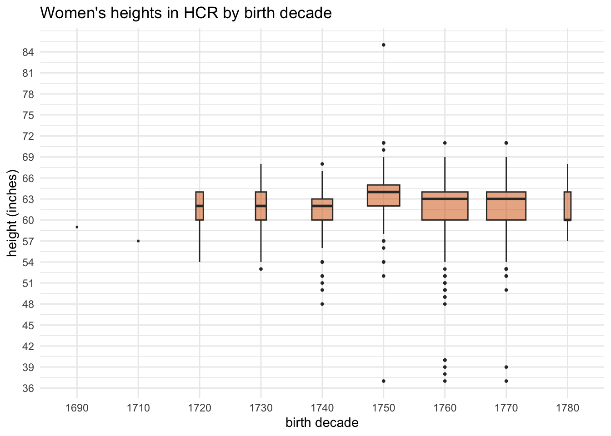
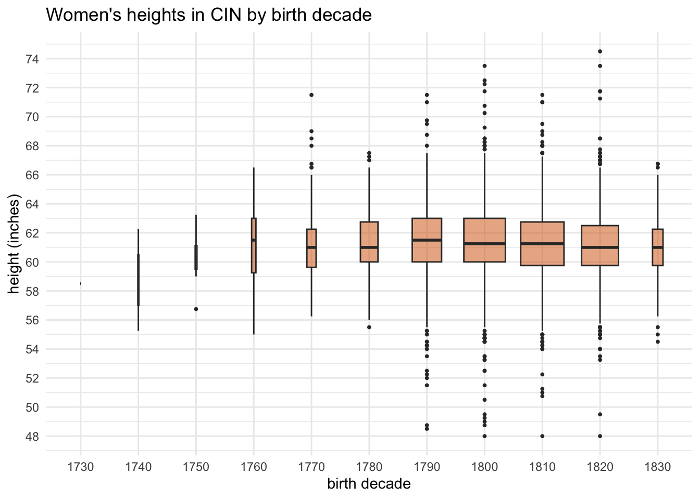
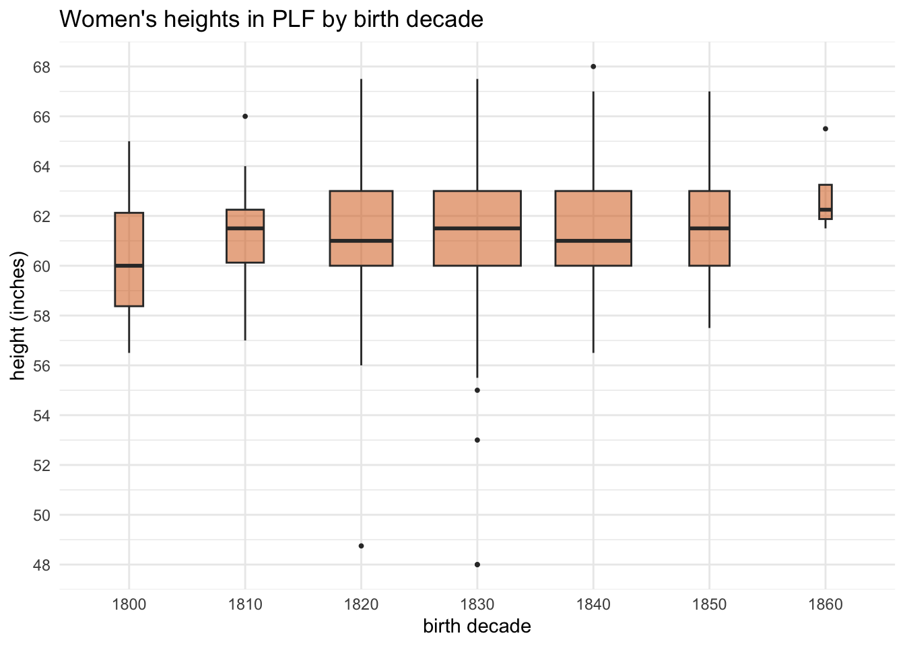
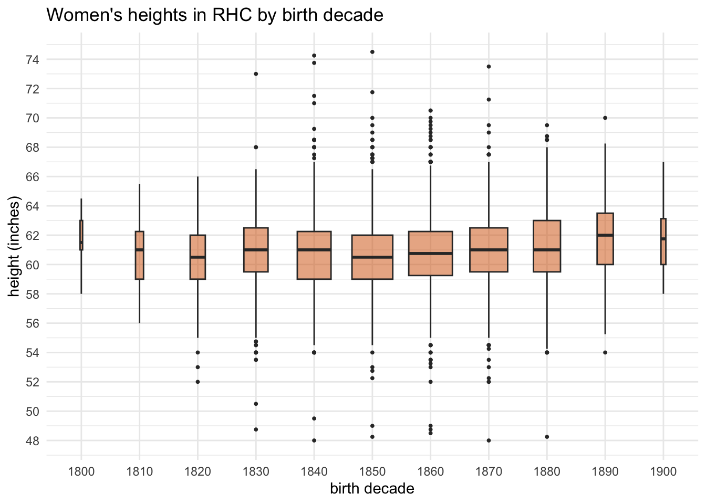
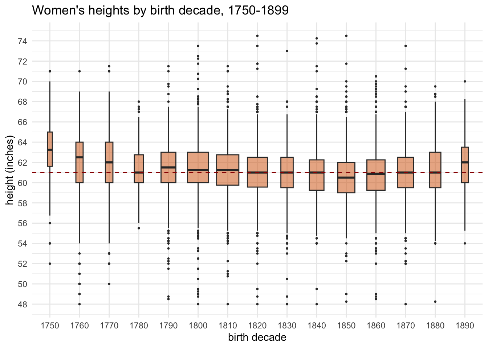
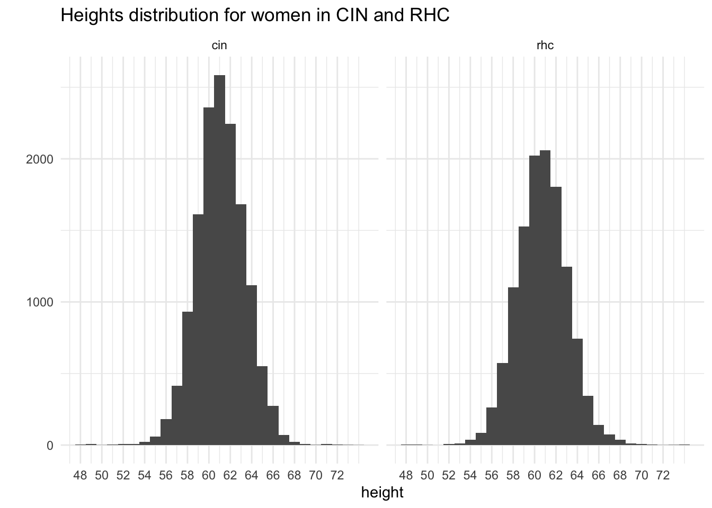
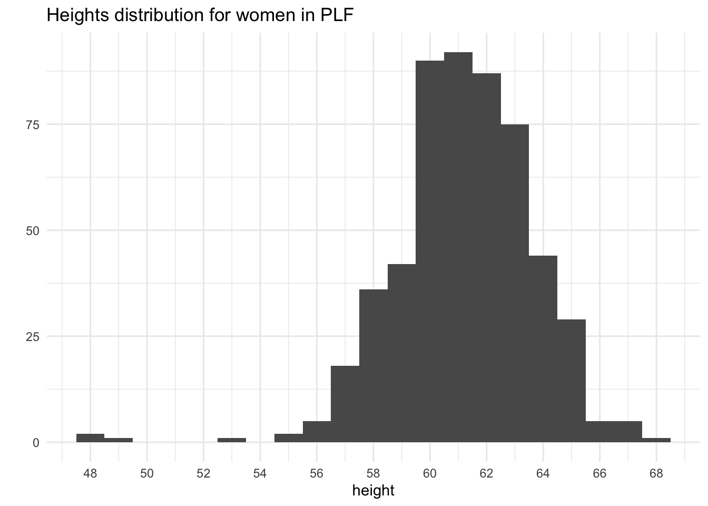
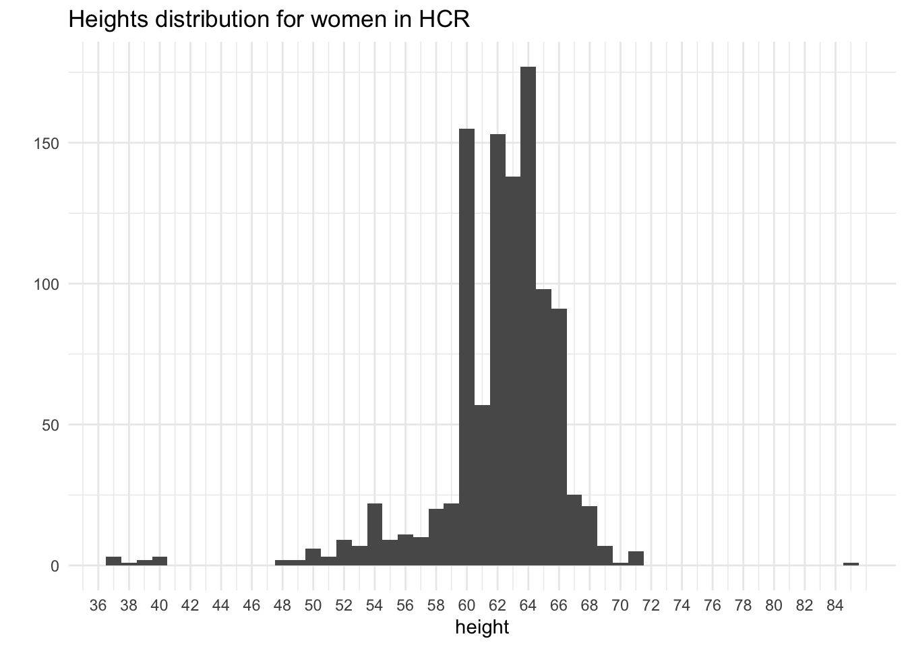

Height Data for Women in the Digital Panopticon
DP
womens history
methods
Introduction
The Digital Panopticon has brought together massive amounts of data about British prisoners and convicts in the long 19th century, including heights for many thousands of individuals. Adult height is strongly influenced by environmental factors in childhood, one of the most important being nutrition. So, if you have enough of it, height data for past populations is extremely informative about standards of living.
I blogged about this data for female prisoners for Women’s History Month in March, and you can read that post for more of the historical discussion.
I decided to re-post a shorter version over here to share the code and focus on the use of two types of particularly important statistical visualisations: box plots and histograms.
The data
The four datasets are subsets of Digital Panopticon datasets.
- HCR, Home Office Criminal Registers 1790-1801, prisoners held in Newgate awaiting trial (1226 heights total, 1061 aged over 19)
- CIN, Convict Indents 1820-1853, convicts transported to Australia (17183 heights, 14181 over 19)
- PLF, Female prison licences 1853-1884, female convicts sentenced to penal servitude (571 heights, 535 over 19)
- RHC, Registers of Habitual Criminals 1881-1925, recidivists who were under police supervision following release from prison (12599 heights, 12118 over 19)
For each dataset, I included only female prisoners with a year of birth as well as a height, and then filtered out children and teenagers so we have adult heights only. It can’t quite be assumed that the datasets contain only unique individuals, so the results here are very much provisional (don’t cite them!). My main interest is in exploration of the data.
The visualisations
A box plot, or box and whisker plot, is a really concentrated way of visualising what statisticians call the “five figure summary”” of a dataset:
- the median;
- upper quartile (halfway between the median and the maximum value);
- lower quartile (halfway between the median and minimum value);
- minimum value;
- maximum value
Here’s a diagram:

The thick green middle bar marks the median value. The two blue lines parallel to that (aka ‘hinges’) show the upper and lower quartiles. The pink horizontal lines extending from the box are the whiskers. In this version of a box plot, the whiskers don’t necessarily extend right to the minimum and maximum values. Instead, they’re calculated to exclude outliers which are then plotted as individual dots beyond the end of the whiskers.
So what’s the point of all this? Imagine two datasets: one contains the values 4,4,4,4,4,4,4,4 and the other 1,3,3,4,4,4,6,7. The two datasets have the same averages, but the distribution of the values is very different. A boxplot is useful for looking more closely at such variations within a dataset, or for comparing different datasets, which might look pretty much the same if you only considered averages.
Histograms are less complex; they’re a type of bar chart that’s particularly useful for visualising the distribution of a dataset.
First views of the datasets
The first thing I look for is incongruities and impossible numbers that might suggest problems with the data, one of the great benefits of exploratory data visualisation. If we see people over 7 feet or under 3 feet tall, or born in 1650, that’s very unlikely to be correct. It should be remembered that minor data errors are par for the course and if it only affects very tiny numbers, I’ll just filter them out in subsequent analysis. If there are a lot of issues, though, that can suggest bigger problems with the reliability of the data.
A trickier problem is values that might or might not be errors. In the 19th century women over the height of 6 feet, for example, are very rare indeed, but they do exist so it can’t be assumed that’s wrong.
HCR
If you compare this HCR plot to the following ones, you’ll see that it has more extreme outliers, and overall the boxes are more asymmetrical (this appears to a lesser extent with PLF). We’ll come back to this.
CIN

PLF

RHC

Put them all together!
This filters out women born before 1750 and after 1899, because the numbers were very small, and extreme outliers. I added a guideline at the median for the 1820s (the mid-point), which I think makes it easier to see the trends (I discuss what I think those mean at more length in the earlier blog post).
Ta da! Not going to lie, I was pretty pleased with this.

Problems
But it’s time to come back and take another look at the HCR data. I’m going to switch to histograms, and these show more clearly that there’s something up. A ‘normal’ height distribution in a population should look like a “bell curve” - quite tightly and symmetrically clustered around the average. (In fact, height data seems to be quite often used in examples of typical normal distributions.) CIN and RHC are close.

PLF isn’t quite as good, though the outliers are minimal.

But HCR is extremely problematic.

Now we can see it’s not just the outliers that are the problem: the distribution is the wrong shape. It has a multimodal distribution - that’s to say, it has several peaks instead of being a pyramid shape.
What could be causing this? The first thing I’ll need to do is go back to the data and see if there are problems with the transcriptions or the extraction from transcription to heights - the spike at 60 inches (5 feet) could suggest that data has got truncated. But if that seems OK, it might mean that the heights were inaccurately recorded in the first place. Then we really have a problem…
Further resources
John Canning, Statistics for the Humanities, especially chapter 3.
Introduction to Statistics: Box plots
Constructing box and whisker plots
Box Plot: Display of Distribution